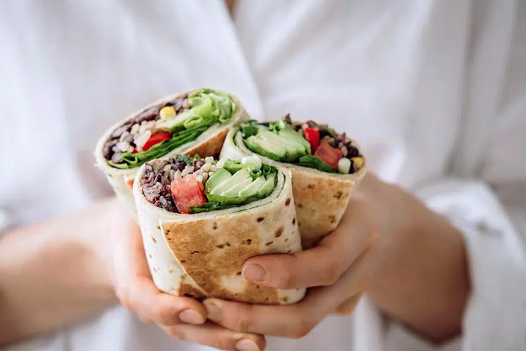

Bean Burrito

This homemade vegan bean burrito is easy to make in only 15 minutes or less!
It's such a healthy, satisfying and filling lunch or dinner idea full of delicious
Mexican flavors and exciting textures.
Ingredients
- 2 large tortillas
- 200 g Tofu/Tempeh
- 80 g salsa
- 80 g cooked kidney or black beans
- ½ green onion, finely chopped
- Salt, pepper & cayenne to taste
- 3 tbsp brown rice, cooked
- ½ avocado, sliced
- 2 tsp corn kernels
- 2 leaves lettuce, shredded
- ½ fresh tomato, chopped
- 3 tbsp red bell pepper, sliced (20 g)
Direction
- In a small bowl, mash beans and salsa with a fork. Don't overdo it;
it's okay when some beans retain their texture.
- Add green onion, salt, pepper and cayenne to taste. Mix until well-combined.
- Cut Tofu/Tempeh in small cubes. Fry it in a pan. Set aside
- Fill each tortilla with half of the cooked rice, bean mixture, corn, avocado, lettuce, tomato and bell pepper.
- Make sure your burritos are not too full so that you can still roll them!
- Fold in the sides and roll it tightly, closing both ends. Repeat with the other burrito.
- Place them both seam side down into a frying pan and grill over medium-high heat for around 3-5 minutes until brown and crispy.
- Flip with a spatula and grill for another 3 minutes. Cut in half and enjoy!
Notes
Reduce the calories by using leafy greens instead of flour tortillas.
Depending on the size of your tortillas, you might need to use less filling for each one so that you'll be able to fold them successfully.
To get a higher protein burrito, add some tofu or tempeh to the filling.
You can store these in the fridge for a couple of days, wrapped in some foil.
You can easily double or triple this recipe to feed more people!
For an even lazier version, simply throw all of the ingredients (minus the tortillas) together to make a delicious burrito bowl.
Return